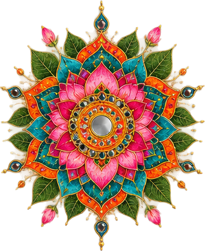
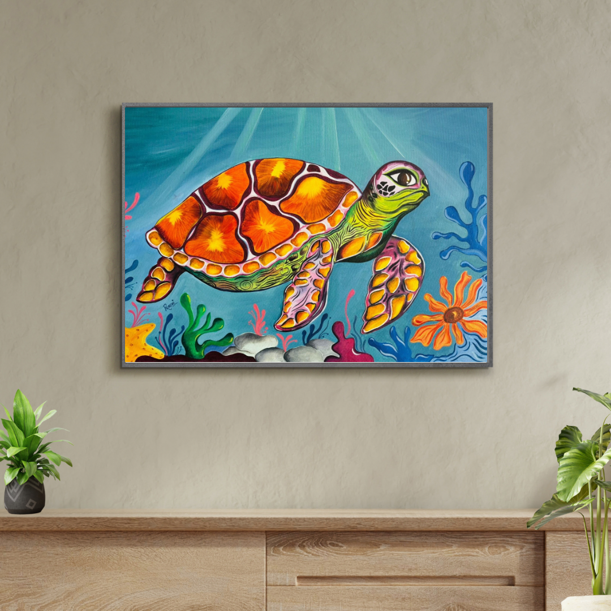
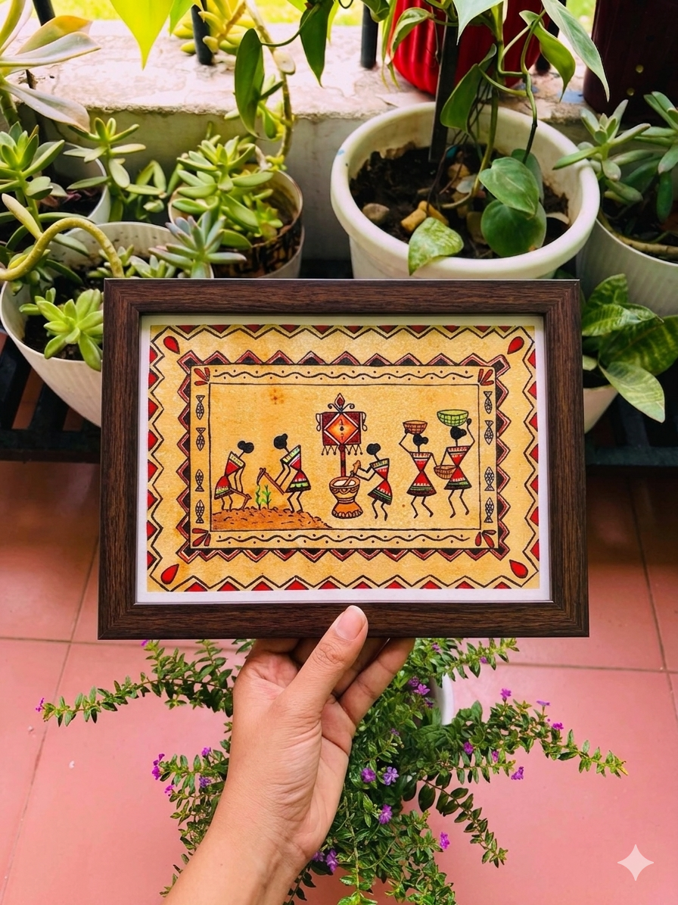
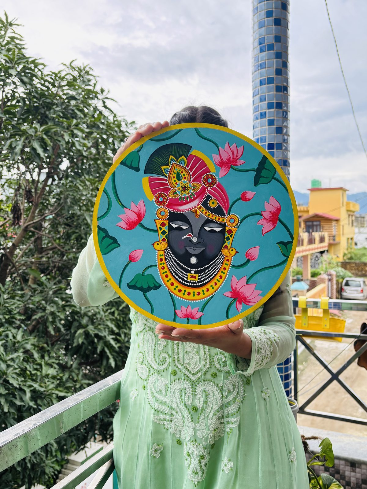
Fine Art Canvases, Skeleton Leaf Miniatures & Handcrafted Clay Jewelry by Visual Researcher & Curator Prachi Mandal
Handcrafted by visual researcher & curator Prachi Mandal in Rishikesh, blending ancient Vedic iconography, natural botanical leaves, and organic Ganga river stones.
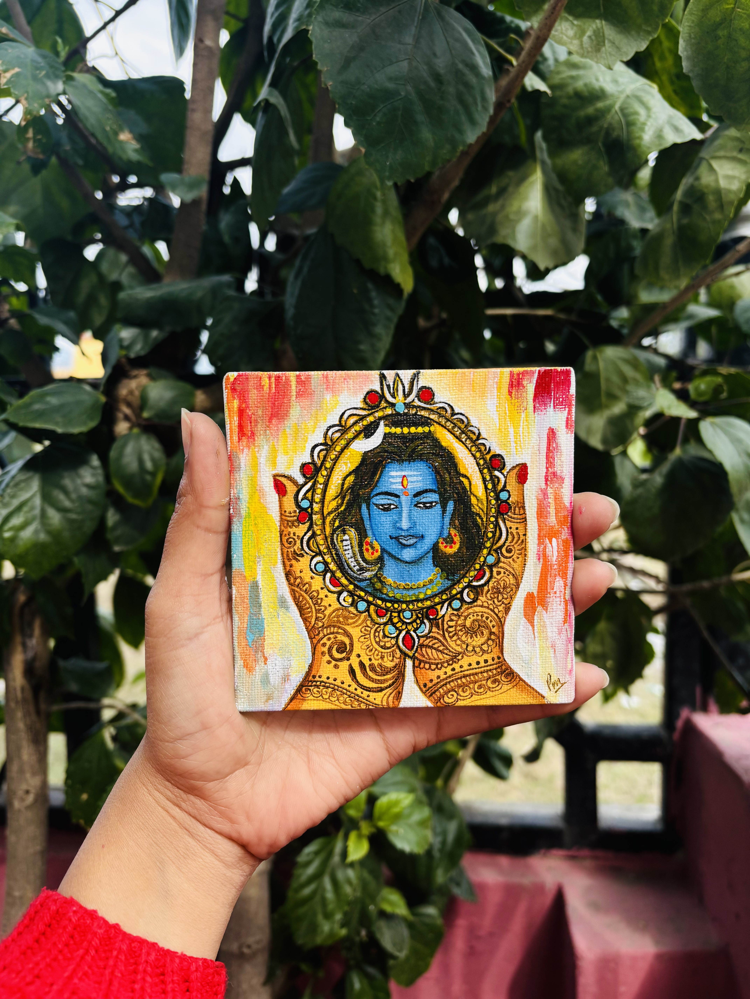
Peepal leaf miniature painting — where delicate organic leaf veins meet timeless sacred devotion.
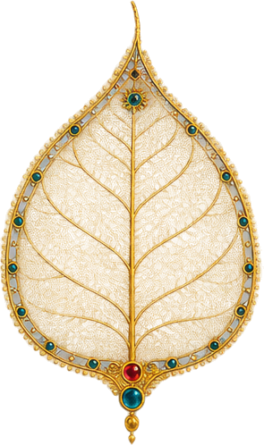
Jeweled Filigree Peepal Leaf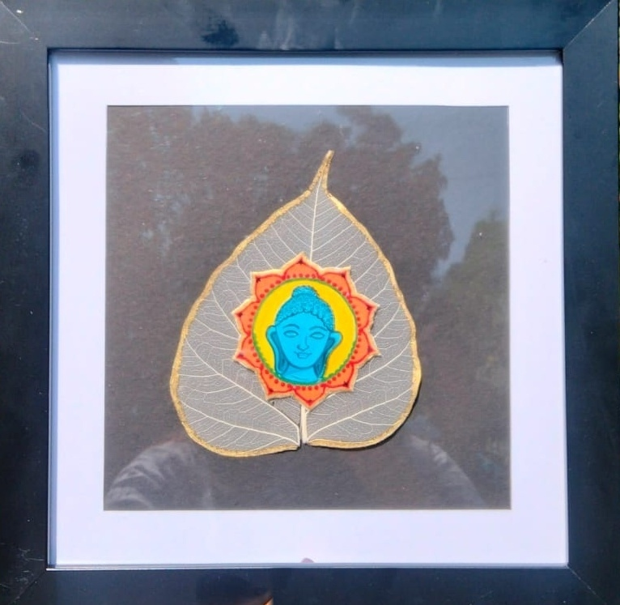
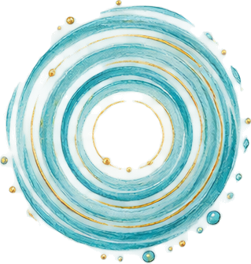
Sanctuary of the GangesSacred Ganga River Stones • Hand-Crafted Organic Pigments
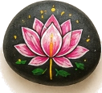
Blooming spiritual purity on river quartz.
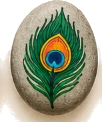
Iridescent eye motif on smooth grey stone.
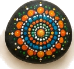
Sacred pointillism in radiant solar hues.
Playful Himalayan harmony & organic devotion.
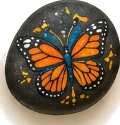
Amber-jeweled wings poised for spiritual flight.
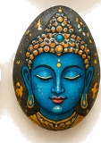
Meditative calm with 24k gold leaf accents.
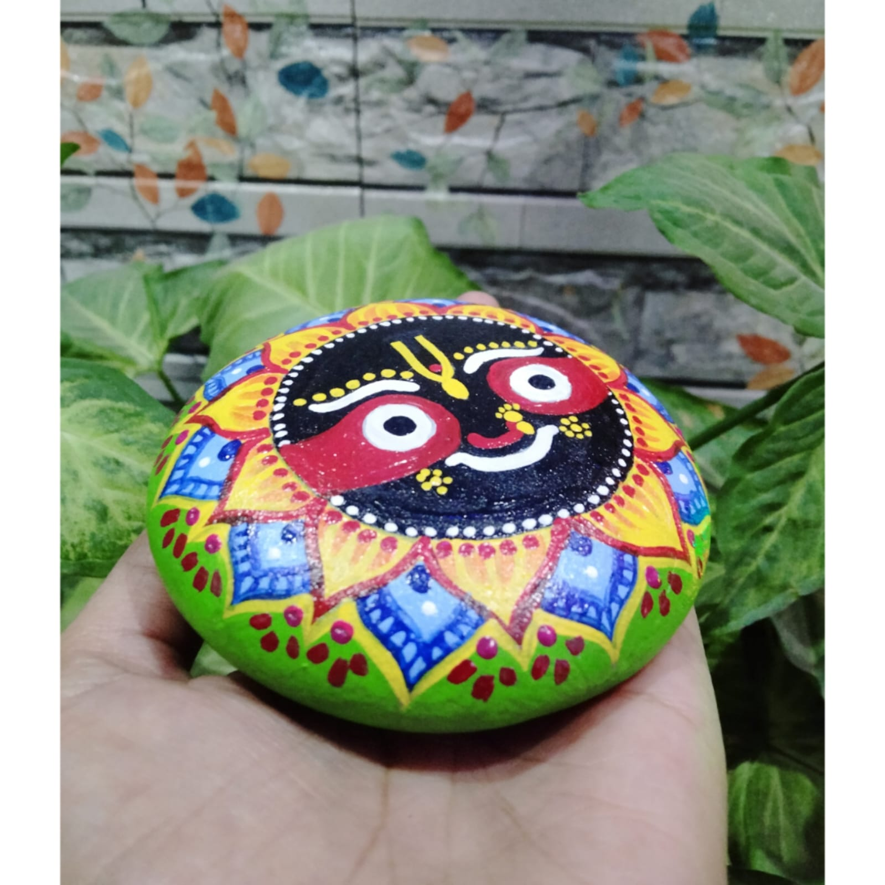
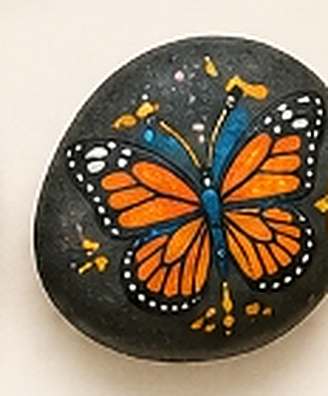
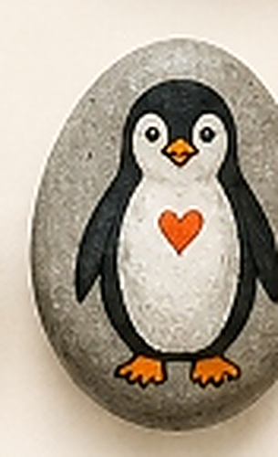
Every miniature begins with ancient techniques: river-washed quartz pebbles, dried peepal skeleton veins, hand-turned clay palettes, and organic mineral pigments.
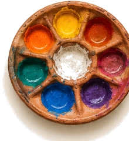
Hand-molded earthen terracotta wells holding wet gouache and natural binders, applied with handcrafted animal-friendly fine bristle brushes.
The working wooden easel palette bearing decades of sacred artwork, accompanied by traditional folk-painted terracotta water vessels.
Sustainably sourced Himalayan ochre, temple vermilion, deep spiritual indigo, and crushed lapis lazuli for archival visual radiance.
Collaborate directly with visual researcher and curator Prachi Mandal to create a bespoke, museum-grade heirloom. Handcrafted in our Rishikesh atelier using sacred botanicals, river-washed quartz, or archival gilded linen.
Every miniature painting on delicate dried skeleton peepal leaves and each hand-sculpted terracotta jewelry piece is prepared with museum-grade archival handling.
Custom Rigid Packaging: Artworks are cushioned in shock-absorbent, moisture-proof, rigid custom boxes lined with acid-free velvet foam to ensure fragile leaf networks and organic clay arrive in flawless condition anywhere in India and across the globe.
Dried Skeleton Peepal Leaf Miniatures:
Hand-Molded Terracotta Jewelry:
Painted River Stones: Sealed with archival moisture-resistant varnish. Wipe gently with a dry or lightly dampened cloth.
Prachi Mandal accepts a limited number of bespoke private and institutional commissions each season:
To request a consultation, please email atelier.prachicraft@gmail.com or message directly on Instagram @pra_chi_1108.
Q: Are the peepal leaves real?
A: Yes. Naturally shed leaves of the sacred Bodhi/Peepal tree are harvested along Himalayan riverbanks, submerged and cleaned through a delicate multi-week soaking process until only the translucent lacy skeleton remains.
Q: Are the terracotta clay pieces durable?
A: Absolutely. They are hand-sculpted, baked for structural resilience, and finished with protective sealants and high-grade thread cords and cowrie shell accents.
Q: Can I purchase directly through Etsy?
A: Yes! Visit our official verified Etsy shop: Rangritico India for instant checkout and international shipping.
Prachi Mandal — UGC NET Qualified Visual Arts Researcher, Curator & Educator.
We welcome collectors, gallery curators, art enthusiasts, and workshop organizers.